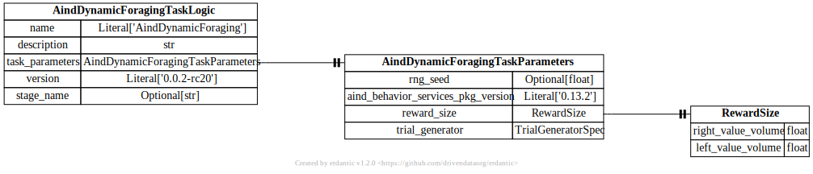

api.task_logic¶
{kind=link}
- class aind_behavior_dynamic_foraging.task_logic.AindDynamicForagingTaskLogic(*, name: Literal['AindDynamicForaging'] = 'AindDynamicForaging', description: str = '', task_parameters: AindDynamicForagingTaskParameters, version: Literal['0.0.2-rc4'] = '0.0.2-rc4', stage_name: str | None = None)[source]¶
Bases:
TaskMain task logic model for the AIND Dynamic Foraging task.
This is the top-level class that encapsulates the complete task logic specification for the dynamic foraging behavioral experiment. It includes all task parameters, environment specifications, and control settings.
- model_config = {'extra': 'forbid', 'str_strip_whitespace': True, 'strict': True, 'validate_assignment': True, 'validate_default': True}[source]¶
Configuration for the model, should be a dictionary conforming to [ConfigDict][pydantic.config.ConfigDict].
- task_parameters: AindDynamicForagingTaskParameters[source]¶
- class aind_behavior_dynamic_foraging.task_logic.AindDynamicForagingTaskParameters(*, rng_seed: float | None = None, aind_behavior_services_pkg_version: ~typing.Annotated[~typing.Literal['0.13.0'], _PydanticGeneralMetadata(pattern='^(0|[1-9]\\d*)\\.(0|[1-9]\\d*)\\.(0|[1-9]\\d*)(?:-((?:0|[1-9]\\d*|\\d*[a-zA-Z-][0-9a-zA-Z-]*)(?:\\.(?:0|[1-9]\\d*|\\d*[a-zA-Z-][0-9a-zA-Z-]*))*))?(?:\\+([0-9a-zA-Z-]+(?:\\.[0-9a-zA-Z-]+)*))?$')] = '0.13.0', block_parameters: ~aind_behavior_dynamic_foraging.task_logic.BlockParameters = BlockParameters(min=20, max=60, beta=20, min_reward=1), reward_probability: ~aind_behavior_dynamic_foraging.task_logic.RewardProbability = RewardProbability(base_reward_sum=0.8, family=1, pairs_n=1), uncoupled_reward: ~typing.Annotated[list[float] | None, ~annotated_types.MinLen(min_length=3), ~annotated_types.MaxLen(max_length=3)] = [0.1, 0.3, 0.7], randomness: ~typing.Literal['Exponential', 'Even'] = 'Exponential', delay_period: ~aind_behavior_dynamic_foraging.task_logic.DelayPeriod = DelayPeriod(min=0.0, max=1.0, beta=1.0), reward_delay: float = 0, auto_water: ~aind_behavior_dynamic_foraging.task_logic.AutoWater | None = None, inter_trial_interval: ~aind_behavior_dynamic_foraging.task_logic.InterTrialInterval = <factory>, response_time: ~aind_behavior_dynamic_foraging.task_logic.Response = Response(response_time=1.0, reward_consume_time=3.0), auto_block: ~aind_behavior_dynamic_foraging.task_logic.AutoBlock | None = None, reward_size: ~aind_behavior_dynamic_foraging.task_logic.RewardSize = RewardSize(right_value_volume=3.0, left_value_volume=3.0), warmup: ~aind_behavior_dynamic_foraging.task_logic.Warmup | None = None, no_response_trial_addition: bool = True, reward_n: ~aind_behavior_dynamic_foraging.task_logic.RewardN | None = None, lick_spout_retraction: bool | None = False, trial_generator: ~aind_behavior_dynamic_foraging.task_logic.trial_generators.TrialGeneratorSpec = IntegrationTestTrialGeneratorSpec(type='IntegrationTestTrialGenerator'), **extra_data: ~typing.Any)[source]¶
Bases:
TaskParametersComplete parameter specification for the AIND Dynamic Foraging task.
This class contains all configurable parameters for the Dynamic Foraging task, including environment structure, task mode settings, operation control, and numerical updaters for dynamic parameter modification.
- block_parameters: BlockParameters[source]¶
- delay_period: DelayPeriod[source]¶
- inter_trial_interval: InterTrialInterval[source]¶
- model_config = {'extra': 'allow', 'str_strip_whitespace': True, 'strict': True, 'validate_assignment': True, 'validate_default': True}[source]¶
Configuration for the model, should be a dictionary conforming to [ConfigDict][pydantic.config.ConfigDict].
- reward_probability: RewardProbability[source]¶
- reward_size: RewardSize[source]¶
- class aind_behavior_dynamic_foraging.task_logic.AutoBlock(*, advanced_block_auto: Literal['now', 'once'] = 'now', switch_thr: float = 0.5, points_in_a_row: int = 5)[source]¶
Bases:
BaseModel
- class aind_behavior_dynamic_foraging.task_logic.AutoWater(*, auto_water_type: Literal['Natural', 'Both', 'High pro'] = 'Natural', multiplier: float = 0.8, unrewarded: int = 200, ignored: int = 100, include_reward: bool = False)[source]¶
Bases:
BaseModel
- class aind_behavior_dynamic_foraging.task_logic.BlockParameters(*, min: int = 20, max: int = 60, beta: int = 20, min_reward: int = 1)[source]¶
Bases:
BaseModel
- class aind_behavior_dynamic_foraging.task_logic.DelayPeriod(*, min: float = 0.0, max: float = 1.0, beta: float = 1.0)[source]¶
Bases:
BaseModel
- class aind_behavior_dynamic_foraging.task_logic.InterTrialInterval(*, min: float = 1.0, max: float = 8.0, beta: float = 2.0, increase: float = 0.0)[source]¶
Bases:
BaseModel
- class aind_behavior_dynamic_foraging.task_logic.Response(*, response_time: float = 1.0, reward_consume_time: float = 3.0)[source]¶
Bases:
BaseModel
- class aind_behavior_dynamic_foraging.task_logic.RewardN(*, initial_inactive_trials: int = 2)[source]¶
Bases:
BaseModel
- class aind_behavior_dynamic_foraging.task_logic.RewardProbability(*, base_reward_sum: float = 0.8, family: int = 1, pairs_n: int = 1)[source]¶
Bases:
BaseModel
- class aind_behavior_dynamic_foraging.task_logic.RewardSize(*, right_value_volume: float = 3.0, left_value_volume: float = 3.0)[source]¶
Bases:
BaseModel
- class aind_behavior_dynamic_foraging.task_logic.Warmup(*, min_trial: int = 50, max_choice_ratio_bias: float = 0.1, min_finish_ratio: float = 0.8, windowsize: int = 20)[source]¶
Bases:
BaseModel